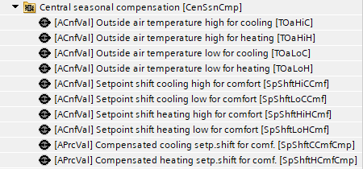
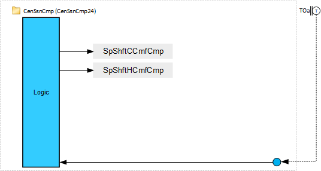
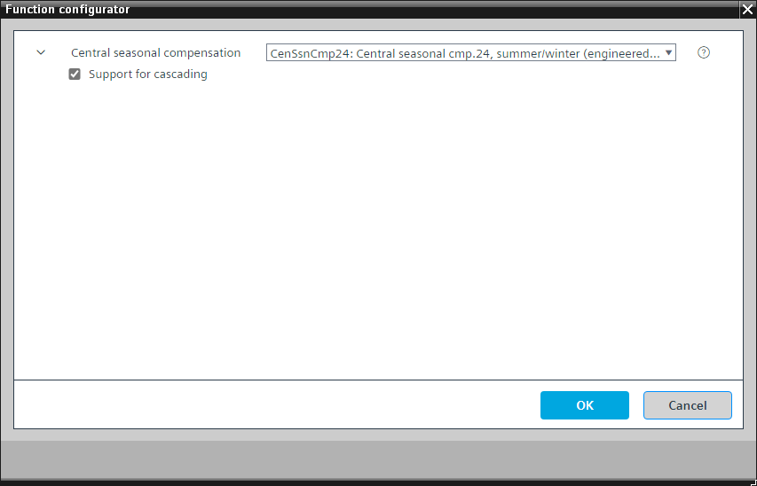
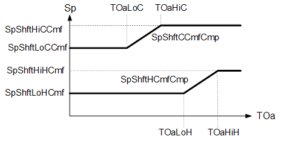

[CenSsnCmp24] 中央季节性补偿 24，夏季/winter，设定点偏移
Program block, name / node subtype:[CenSsnCmp24] 中央季节性补偿 24 号，夏季/winter
Library hierarchy: Coordination
Family: CenSsnCmp
项目树 | 图表 |
|---|---|
|
 |  |
Configurator


程序块存储在没有 I/Os. 的库中 使用auto-create and auto-connect函数创建 I/Os 和 /or 将它们连接到接口块，例如 R_A、CMD_B。或者，从包含库中预定义 I/Os 的文件夹中取出 I/Os，并从工厂中取出 /or，并将它们连接到接口块。
CenSsnCmp24 根据特征曲线并根据室外空气温度计算房间舒适度设定点的变化。
姓名 | 描述 | 类型 | 报警/通知类 | 趋势/类型 | |
|---|---|---|---|---|---|
|
SpShftCCmfCmp | Compensated cooling setpoint shift for comfort | APrcVal: Analog process value | N/A | N/A | |
TOaLoC | Outside air temperature low for cooling | ACnfVal: Analog configuration value | N/A | N/A | |
SpShftLoCCmf | Setpoint shift cooling low for comfort | ACnfVal: Analog configuration value | N/A | N/A | |
TOaHiC | Outside air temperature high for cooling | ACnfVal: Analog configuration value | N/A | N/A | |
SpShftHiCCmf | Setpoint shift cooling high for comfort | ACnfVal: Analog configuration value | N/A | N/A | |
SpShftHCmfCmp | Compensated heating setpoint shift for comfort | APrcVal: Analog process value | N/A | N/A | |
TOaLoH | Outside air temperature low for heating | ACnfVal: Analog configuration value | N/A | N/A | |
SpShftLoHCmf | Setpoint shift heating low for comfort | ACnfVal: Analog configuration value | N/A | N/A | |
TOaHiH | Outside air temperature high for heating | ACnfVal: Analog configuration value | N/A | N/A | |
SpShftHiHCmf | Setpoint shift heating high for comfort | ACnfVal: Analog configuration value | N/A | N/A | |
描述 |
|---|
|
Support for cascading |
CenSsnCmp24 评估外部空气温度并计算供暖的舒适温度设定点偏移（SpShftHCmfCmp）和冷却（SpShftCCmfCmp).

Key
|
Sp | Setpoint |
TOaLoC | Outside air temperature low for cooling |
TOaHiC | Outside air temperature high for cooling |
SpShftHiCCmf | Setpoint shift cooling high for comfort |
SpShftLoCCmf | Setpoint shift cooling low for comfort |
SpShftHiHCmf | Setpoint shift heating high for comfort |
SpShftLoHCmf | Setpoint shift heating low for comfort |
TOaLoH | Outside air temperature low for heating |
TOaHiH | Outside air temperature high for heating |
TOa | Outside air temperature |
SpShftCCmfCmp | Compensated cooling setpoint shift for comfort |
SpShftHCmfCmp | Compensated heating setpoint shift for comfort |